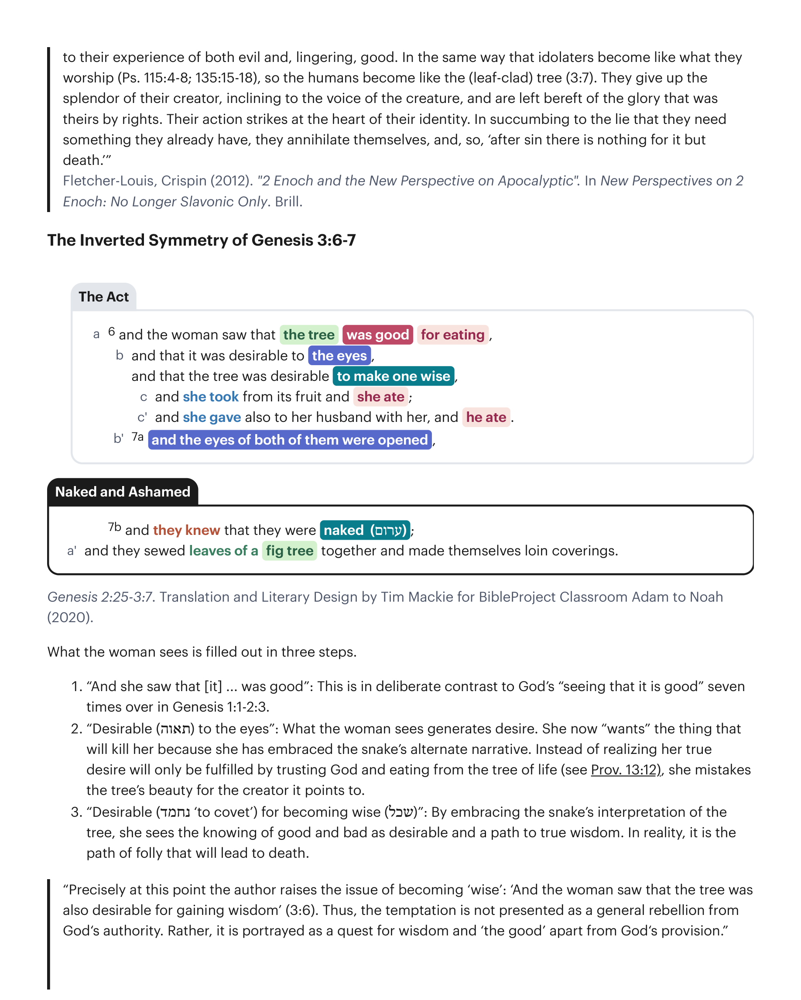

Em Gênesis 3:1, observe como a serpente primeiro distorce o mandamento divino em Gênesis 2:16-17 de modo que a generosidade de Deus ("comei de todas as árvores do jardim") é retratada como escassez protetora. Sua primeira tática é minar o caráter de Deus criando uma oportunidade fácil de correção. "A óbvia imprecisão da serpente em sua versão da proibição de Deus soa como astúcia ou falta de sutileza. Na verdade, é um truque bem conhecido do vigarista parecer estúpido para colocar os outros numa posição de superioridade fingida. Qualquer vigarista sabe que é melhor começar perdendo alguns jogos e dar a impressão aos outros de que serão vencedores fáceis."In Genesis 3:1, notice how the snake first twists the divine command in Genesis 2:16-17 so that God's generosity ("eat from all the trees of the garden") is portrayed as protective scarcity. His first tactic is to undermine God's character by creating an easy opportunity for correction. "The serpent's obvious inaccuracy in his rendition of God's prohibition sounds like cunning or lack of subtlety. In fact, it is a well-known trick of the con man to appear stupid to put others in a position of sham superiority. Any hustler knows that she better start by losing some games and give the impression to other that they will be easy winners."
Lacoque, Andre (2006). O Julgamento da Inocência: Adão, Eva e o Yahwista. Cascade Books.Lacoque, Andre (2006). The Trial of Innocence: Adam, Eve, and the Yahwist. Cascade Books.
Em Gênesis 3:2-3, a mulher responde corrigindo a serpente, e esclarece que Deus os convidou a comer de todas as árvores exceto uma. A serpente dirigiu a conversa de modo que a única proibição agora se torna o foco. Ela primeiro fornece o racional de Deus para evitar a árvore — escolher comer dela constituirá um ato de autonomia rebelde, tomando em suas próprias mãos a sabedoria e autoridade para discernir entre o bem e o mal. Em Gênesis 3:4-5, a resposta da serpente é oferecer uma interpretação alternativa tanto das palavras quanto das intenções de Deus. Deus está na verdade retendo um bem último de suas criaturas, impedindo-as de se tornarem "como Elohim." "Em Gênesis 2-3, o pecado de Adão e Eva é um desvio de um relacionamento de amor e confiança de seu criador. A serpente oferece a eles uma falsa deificação; uma imitação trágica de uma natureza divina que eles já têm. Eles já são a imagem divina de Deus (tanto em Gn 1:26-28 quanto também em Gn 2), carregando o sopro divino (2:7), com privilégios divinos (tais como a habilidade de nomear partes da criação assim como o próprio Deus fez nos Dias 1-3) e sabedoria (veja especialmente 2:25 onde eles estão ערומים: 'nus' ou 'astutos'). Deus já lhes mostrou a diferença entre bem e mal e continuaria a guiá-los nesse discernimento. Eles são os ídolos-imagem do criador Yahweh Deus, a serpente oferece a eles a chance de tornarem-se apenas como 'deuses' (elohim, assim, corretamente, a LXX). Em aparente ignorância ou esquecimento de — ou em rebelião contra — sua verdadeira identidade, eles caem presa das insinuações da serpente de que seu criador os havia enganado (Gn 3:1-5). A árvore que deveria provar seu discernimento entre o mal-agir e a fidelidade a Deus, torna-se em vez disso uma árvore que leva a seus juízos tanto do mal quanto, persistente, do bem. Da mesma forma que os idólatras tornam-se como aquilo que adoram (Sl 115:4-8; 135:15-18), assim os humanos tornam-se como a árvore (revestida de folhas) (3:7). Eles desistem do esplendor de seu criador, inclinando-se à voz da criatura, e são deixados desprovidos da glória que era sua por direito. Sua ação atinge o coração de sua identidade. Ao sucumbir à mentira de que precisam de algo que já têm, eles aniquilam a si mesmos, e, assim, 'após o pecado não há nada a não ser a morte.'"In Genesis 3:2-3, the woman responds by correcting the snake, and she clarifies that God invited them to eat from all of the trees except one. The snake has directed the conversation so that the single prohibition now becomes the focus. She first provides God's rationale for avoiding the tree—choosing to eat from it will constitute an act of rebellious autonomy, taking into one's own hands the wisdom and authority to discern between good and bad. In Genesis 3:4-5, the snake's response is to offer an alternative interpretation of both God's words and his intentions. God is actually withholding an ultimate good from his creatures, preventing them from becoming "like Elohim." "In Genesis 2-3, Adam and Eve's sin is a departure from a relationship of love and trust of their creator. The serpent offers them a fake deification; a tragic imitation of a divine nature that they already have. They are already God's divine image (both in Gen. 1:26–28 and also in Gen. 2.), carrying the divine breath (2:7), with divine privileges (such as the ability to name parts of creation as God himself did on Days 1-3) and wisdom (see esp. 2:25 where they are ערומים: 'naked' or 'shrewd'). God has already showed them the difference between good and evil and would continue to guide them in that discernment. They are the image-idols of the creator Yahweh God, the serpent offers them a shot at becoming only like 'gods' (elohim, so, cor- rectly, the LXX). In apparent ignorance or forgetfulness of—or in rebellion against—their true identity they fall prey to the serpent's insinuations that their creator had deceived them (Gen. 3:1-5). The tree that should have proved their discernment between wrongdoing and faithfulness to God, becomes instead a tree that leads to their experience of both evil and, lingering, good. In the same way that idolaters become like what they worship (Ps. 115:4-8; 135:15-18), so the humans become like the (leaf-clad) tree (3:7). They give up the splendor of their creator, inclining to the voice of the creature, and are left bereft of the glory that was theirs by rights. Their action strikes at the heart of their identity. In succumbing to the lie that they need something they already have, they annihilate themselves, and, so, 'after sin there is nothing for it but death.'"
Fletcher-Louis, Crispin (2012). "2 Enoque e a Nova Perspectiva sobre o Apocaliptismo". Em Novas Perspectivas sobre 2 Enoque: Não Mais Apenas Eslavo. Brill.Fletcher-Louis, Crispin (2012). "2 Enoch and the New Perspective on Apocalyptic". In New Perspectives on 2 Enoch: No Longer Slavonic Only. Brill.

O que a mulher vê é preenchido em três passos. 1. "E viu que [ele] ... era bom": Isto está em deliberado contraste com o "ver que é bom" de Deus sete vezes em Gênesis 1:1-2:3. 2. "Desejável (תאוה) aos olhos": O que a mulher vê gera desejo. Ela agora "quer" a coisa que a matará porque abraçou a narrativa alternativa da serpente. Em vez de perceber que seu verdadeiro desejo só será satisfeito confiando em Deus e comendo da árvore da vida (veja Prov. 13:12), ela confunde a beleza da árvore com o criador a que ela aponta. 3. "Desejável (נחמד 'cobiçar') para tornar-se sábia (שכל)": Ao abraçar a interpretação da serpente sobre a árvore, ela vê o conhecer do bem e do mal como desejável e um caminho para a verdadeira sabedoria. Na realidade, é o caminho da insensatez que levará à morte.What the woman sees is filled out in three steps. 1. "And she saw that [it] ... was good": This is in deliberate contrast to God's "seeing that it is good" seven times over in Genesis 1:1-2:3. 2. "Desirable (תאוה) to the eyes": What the woman sees generates desire. She now "wants" the thing that will kill her because she has embraced the snake's alternate narrative. Instead of realizing her true desire will only be fulfilled by trusting God and eating from the tree of life (see Prov. 13:12), she mistakes the tree's beauty for the creator it points to. 3. "Desirable (נחמד 'to covet') for becoming wise (שכל)": By embracing the snake's interpretation of the tree, she sees the knowing of good and bad as desirable and a path to true wisdom. In reality, it is the path of folly that will lead to death.
"Precisamente neste ponto o autor levanta a questão de tornar-se 'sábio': 'E a mulher viu que a árvore era também desejável para obter sabedoria' (3:6). Assim, a tentação não é apresentada como uma rebelião geral da autoridade de Deus. Em vez disso, é retratada como uma busca por sabedoria e 'o bem' à parte da provisão de Deus.""Precisely at this point the author raises the issue of becoming 'wise': 'And the woman saw that the tree was also desirable for gaining wisdom' (3:6). Thus, the temptation is not presented as a general rebellion from God's authority. Rather, it is portrayed as a quest for wisdom and 'the good' apart from God's provision."
Sailhamer, John H. (1995). O Pentateuco como Narrativa: Um Comentário Bíblico-Teológico. Zondervan Academic.Sailhamer, John H. (1995). The Pentateuch as Narrative: A Biblical-theological Commentary. Zondervan Academic.
Observe que a serpente não estava mentindo sobre "os olhos sendo abertos" mas sobre que tipo de iluminação resultaria. Os humanos tornam-se conscientes de sua própria nudez e vulnerabilidade um com o outro e escondem seus corpos um do outro. Sua insensatez e rebelião foram causadas por seu desejo idólatra por uma árvore proibida, de modo que agora os humanos tornam-se como árvores, cobrindo seus corpos com folhas.Notice that the snake was not lying about "the eyes being opened" but about what kind of enlightenment would result. The humans become aware of their own nakedness and vulnerability with each other and hide their bodies from one another. Their folly and rebellion was caused by their idolatrous desire for a forbidden tree, so now the humans become like trees, covering their bodies with leaves.
A serpente lança dúvida sobre a bondade e generosidade de Deus ao insinuar que Deus está privando a humanidade de coisas boas. Compare as palavras da serpente em Gênesis 3:4-5 com o mandamento de Deus em Gênesis 2:16-17. O que Deus diz em seu mandamento original que mostra que a serpente está errada sobre a generosidade de Deus?The snake casts doubt on God's goodness and generosity by implying that God is depriving humanity of good things. Compare the snake's words in Genesis 3:4-5 to God's command in Genesis 2:16-17. What does God say in his original command that shows the snake is wrong about God's generosity?